It is helpful to understand the model data structure before trying to create a model. A model is basically a collection of points that refer to or mark interesting locations in an image. These points are stored in groups that are called contours. In the simplest case, a contour is a closed boundary around a region in an image. However, you should think of a contour more generally as a set of associated points, which may or may not be connected by lines. You will typically want to keep track of more than one type of feature in an image. This is facilitated by allowing contours to be grouped together into separate objects. Each object can be given its own name and all contours in the object share common attributes such as color and line thickness. This table shows how objects, contours, and points are organized in a hierarchy in the model.
|
Model header: includes pixel size, Z-scale, and information relating model to image coordinates. |
||||||||||||||
|
|
|
||||||||||||
To create a model for a MRC image file called example.mrc run the
following 3dmod command. This command will cause a new model to be created,
ready to edit.
3dmod example.mrc
If a model has already been saved but needs further editing run the command
3dmod example.mrc example.mod
When this command is run a window similar to the one below will open up. A
secondary window containing the image of the image file and model file is
opened after the data has been loaded.
Note that the files used for the examples shown below, dual.rec and
example.mod, are among the
sample data files available from our web site.
The title bar of the Info Window shows the name of the image file and also contains controls for minimizing the window or closing it, which is a quick way to exit the program. Below the menu line are some buttons that control window behavior, with the name of the current model file shown on the right. The peg button allows you to keep the Info Window on top of windows from all other programs. The raise button (two up arrows) will bring all of the windows of the current 3dmod above windows from other programs. The buttons with the curved arrows will undo or redo changes to the model. The "Show point" button will be explained in a moment.
Below these buttons are a set of controls called spin boxes, which are used extensively in 3dmod. A spin box shows a current value of some parameter, and lets you change that parameter either by increasing or decreasing it with the up and down arrow buttons, or by typing in a new value. The three spin boxes on the left show the current model object, contour and point, as well as the color of the current object. The model being edited above has 4 objects; the 4th object is currently selected. The 4th object has 11 contours and the 5th contour is currently selected. This contour has 20 points and the 10th point is the current point.
Generally, when you change object, contour, or point with one of these spin boxes, the program will show the new current point in the image windows and change the section being displayed if necessary. Sometimes you will not want this to happen, such as when you want to switch between objects without having the displayed section change. In that case, just turn off the "Show point" checkbox.
The three spin boxes on the right are the image position controls. They show that the image dimensions are 572 by 378 and that there are 31 sections. The current image point is at the location (237,259) with the origin at the lower left corner of the image. The current section is number 16. If you change the Z value, a different section will be shown in image windows. You can change X and Y values to move the current image point. The current image point is not the same as the current model point. It is marked by a cross when the program is not in model mode, and it determines what coordinates are displayed in some of the image windows.
At the bottom of the Info Window are the Black and White sliders, which you can use to adjust the contrast and brightness of the displayed image. Pixel values between the selected black and white levels (151 and 239) are stretched out to occupy the full dynamic range of the display. Moving the sliders toward each other will increase contrast, while moving one or both to the left will increase brightness.
These sliders have features common to nearly all of the slider controls in 3dmod. Clicking to one side of the handle with the left mouse button will change the value by one. Clicking with the middle mouse button will jump the slider to the position of the mouse pointer. Dragging the handle by clicking and holding the left mouse button will cause the image contrast to be continuously updated until you release the button. In other words, these sliders are continuously active, or "hot". Sometimes the program will not perform well when a slider is continuously active, such as with very large images or models. You can keep a slider from being hot by holding down the Ctrl key (Apple key on the Macintosh). When you do this, the numeric value will be continuously displayed but the image will not be updated until you release the slider.
Below the sliders are several controls related to setting the contrast.
The "Movie" and "Model" radio buttons allow a user to select one of the two modes. When "Movie" is selected, pressing the middle or right mouse button will cause the image to movie back and forth. When "Model" is selected, the three different mouse buttons will edit the model, as described below.
The bottom panel of the Info Window contains additional information and status messages. You can expand the window vertically to see more of the information at once.
| 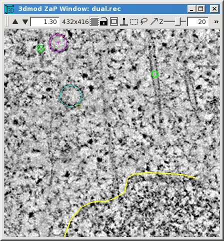
|
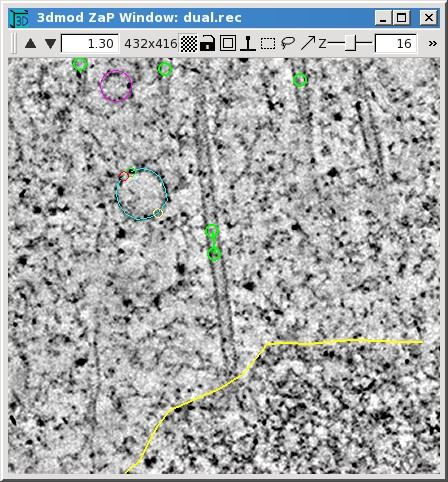
|
This display of two nearby slices from a tomogram (sections 20 and 16) illustrates the three kinds of model objects: closed contours, open contours, and scattered points.
The type of contours in an object, and the symbols displayed at individual points, can be selected with the Object Edit dialog box. Here are two examples.
|
|
|
On the left is a box for the open contour object that is used to track microtubules between sections. A circle is selected for the symbol display, and the symbol size has been set to 7, so that it will be easy to see the symbol when there is only one point on a particular section. On the right is a box for the scattered point object used to model small vesicles; here no symbol is selected but the sphere radius for points has been set to 14. Several other properties can be set with this dialog. In addition, there is a button at the top to copy the properties of an object from another object, and a button at the bottom to set the properties of the current object as the default for new objects.
Model points are added or changed using a 3-button mouse with the program in Model mode. The table below gives an overview of the mouse controls in Movie and Model mode.
| Mouse Button | Movie Mode | Model Mode | ||||
|---|---|---|---|---|---|---|
| First | Select position or drag mouse to pan image. | Attach to nearby model point or drag mouse to pan image. | ||||
| Second | Movie image forward, or stop movie. | Add new model point or drag mouse to add several points. | ||||
| Third | Movie image backward, or stop movie. | Modify the current model point or drag mouse to modify several points. | ||||
The mouse buttons are referred to as "first", "second", and "third" here and in the help pages because these functions can be assigned to different actual buttons. By default, they correspond to the left, middle, and right buttons, respectively. The mapping can be changed in the 3dmod Preferences dialog, opened by selecting Options in the Edit menu (or Preferences in the 3dmod menu on a Mac) and switching to the "Mouse" tab. The portion of this dialog in the image below shows an assignment that is similar to most other software, because drawing is done with the left button. New users in particular should consider switching to this mapping, although it could be problematic if you will be receiving hands-on assistance from an established user who is used to the default mapping. Also note that our various tutorials and videos generally assume the default assignments.
When you first start a new model or a new object in a model, your first model point will be added to an empty contour. There are two basic ways to add model points to a contour. You can click the second mouse button to add each individual point after moving to a desired position. The other way is to hold down the second button while dragging the pointer over a desired path, which will add closely spaced points along the path.
Once you have finished a contour and want to start another one, you need to create a new contour. This can be done with the menu entry Edit-Contour-New, but is much more conveniently done by pressing "n", which is one of many hot keys available to assist modeling. If you are modeling with closed contours, a new contour is created automatically when you switch to a new section and press the second mouse button. When you are modeling with open contours, this does not happen automatically unless you select the option to "Start new contour at new Z" seen above in the Object Edit dialog box. This option is not turned on for modeling microtubules, but it is useful for drawing open contours that are supposed to be confined to one section, such as the ones along the chromosome boundary.
As you model, the last point added is left as the current model point. You can change the current model point by clicking with the first mouse button near a point in any contour that is present on the section. This is one way to change the contour or object being modeled. If you click with the first button at a position that is far from any model points, the current point and contour become undefined. If you then add a model point, it will be placed in a new contour, so this is yet another way to begin a new contour.
The third mouse button is used to modify existing points by either moving or deleting them. Use this button alone to move one or more points; hold down the Ctrl key to delete points under the cursor while clicking or holding down the third button.
The toolbar for the Zap window has a number of useful controls.
3dmod has many hot keys, which are listed both in the man page for 3dmod and in a help page that can be accessed from the Help-Hot Keys menu entry. These hot keys will work from all of the 3dmod image display windows, and even from the Info Window or other dialog boxes. There are also hot keys active only in particular windows, which are described in the help for those windows. Most of these hot keys are accessible in a popup menu when you click with the right mouse button over the toolbar of a window. This feature provides a handy way to look up an obscure but useful hot key. The most commonly used hot keys are listed here:
PageUp Show the next section (increase Z)
PageDown Show the previous section (decrease Z)
Home Show the last section
End Show the first section
Delete Delete current model point
- Zoom down
= Zoom up
s Save the model
n Start a new contour
Ctrl-S Snapshot an image window to a Tiff file
Shift-S, Ctrl-Shift-S Shapshot to non-Tiff file (usually JPEG and PNG)
t Toggle model drawing off or on
, Slow down movie or model rotation
. Speed up movie or model rotation
| 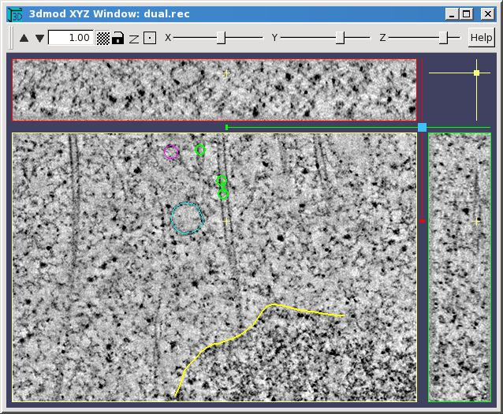 |
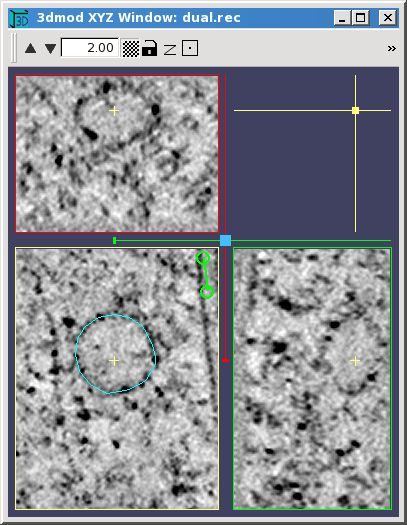 |
The XYZ Window shows not just the XY plane but also the two orthogonal planes, YZ and XZ, in separate view boxes. It allows you to movie through the volume in any of these planes independently, and also displays the intersection of the model with each of the three planes. In the example, the XY plane is in the lower left, the XZ plane is above it, and the YZ plane is to the right. The current image point governs which planes are displayed; its position is marked by a small yellow cross in each image panel. In the figure on the left, you can see the large modeled vesicle in the XZ (top) plane, and an oblique slice through the microtubule marked by the small yellow cross in the YZ (right) plane.
When an XYZ Window is first opened, the window size, the zoom, and the division of the window among the three view boxes are set so that the whole image will appear in each of the view boxes. You can then resize the window if desired, and the program will maintain the same proportion among the view boxes. If you make the window smaller or zoom up, then not all of the image will appear, and you can pan with the first mouse button in any one of the view boxes to bring features of interest back into view. Panning in one plane will typically shift the image in another plane so that all three planes will always show the same feature. If you find that the top and side view boxes are too narrow, which can easily be the case after zooming up, then you can reapportion the window area among the three boxes by dragging the light blue square diagonally with the first mouse button.
The toolbar of the XYZ Window has zoom controls, a low/high resolution button, and a lock button as in the Zap Window. The Z button will apply the model's Z-scale factor, if one is set (see below), to stretch out the Z dimension in the XZ and YZ planes. There is a centering button for bringing the current point as near to the center of the view boxes as possible. In movie mode, it will center the current image point marked by the yellow crosses; in model mode it will center the current model point. The toolbar also has sliders for riffling through the X, Y, or Z coordinate.
The colored marker lines in the margins of the images also indicate the current point coordinates. They contain small handles that can be grabbed with the mouse to riffle through the images in one plane, as an alternative to the toolbar sliders. The color of the marker line matches the color of the border around the image that is controlled by it; for example, the red line controls the plane selected in the upper panel.
PageUp and PageDown keys can be used to step through the planes, as usual, except that these keys step through XZ or YZ slices when the mouse is over the XZ or YZ plane, respectively. Similarly, the arrow keys, which ordinarily step the current image point in X or in Y, operate relative to whichever plane the mouse is located in.
In Movie mode, the mouse buttons behave the same as in the Zap Window, and they act separately in the three image panels for selecting the current image point or starting a movie in that panel. Basic modeling can also be done in all three planes, again with the same mouse button functions as in the Zap Window. The display of the model in a given plane is essentially the same as in the Zap window for items drawn in that plane. Items drawn in one plane will show up in other planes to the extent that they intersect the other two planes. Scattered points will show up well everywhere; contours will be hard to see in other planes.
 |
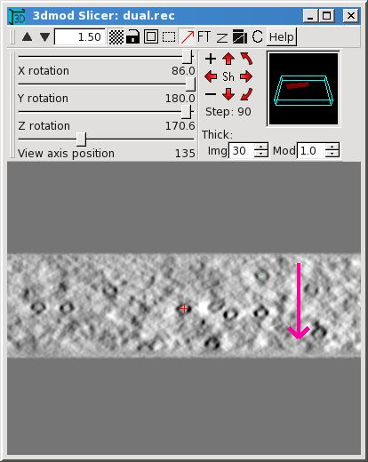 |
The Slicer Window provides a much more flexible view of structures than the XYZ Window because it can display a slice at an arbitrary orientation through the image volume. The orientation is set by adjusting the X, Y, and Z rotation sliders in the second toolbar. In the example, one of the oblique microtubules was centered in the window, then the Z rotation was adjusted to orient the microtubule vertically, then the X rotation was adjusted to bring the microtubule into longitudinal section. Small changes in the X and Y sliders usually cause big changes in the image appearance, whereas the Z slider will primarily rotate the image clockwise and counterclockwise unless X or Y angles are large.
When a Slicer is opened, the center of the displayed slice is initially at the current image point, but it can then be panned in the plane of the slice using the first mouse button, just as for other windows. You can step through slices in the direction perpendicular to the displayed slice using the PageUp and PageDown hot keys. You also use the 'View axis position' slider to riffle through slices in that direction. The center of the window is marked by a red cross; this is the center of rotation when the slice angles are changed.
There are alternative methods of changing the slice angles which can often be more convenient and intuitive than adjusting the sliders. They involve rotating the volume by increments around the viewing axes instead of directly changing the overall rotation around an axis. You can use the cluster of red arrows to rotate by steps around the vertical or horizontal axis (the straight arrows) or in the plane of the slice (the curved arrows). The size of the rotation step is shown and can be changed with the minus and plus buttons. A second way to rotate by steps around viewing axes is to use the numeric keypad. Ordinarily, the keys there operate on an individual volume axis angle, but if you either hold down the Shift key or turn on the Sh button in the middle of the toolbar arrow cluster, the arrows in the numeric keypad will rotate around X or Y viewing axes and PageUp and PageDown will rotate in the plane of the slice. Finally, if you hold down the Shift key or turn on the Sh button, dragging with the second mouse button will rotate the volume around an axis perpendicular to the direction of mouse motion, and dragging with the third mouse button will rotate in the plane of the slice. For example, the image in the middle shows the result of dragging with the second mouse button in the direction of the red arrow until some of the microtubules come into good cross-section. In this particular case, because the some microtubules were already in good longitudinal section, the same result can be obtained by setting the step size to 90 and using the toolbar red up or down arrow.
The most useful items in the Slicer toolbars are the following.
If the Ctrl key is held down, the second and third mouse buttons will start a
movie in the Slicer window, as in the Zap window. The program will movie
through slices in a direction prependicular to the current slice, and will even
adjust its direction if you change the rotation sliders while it is movieing.
It is possible to model in the Slicer, again with the same mouse button
functions as in the Zap window. This provides a convenient way to track
trajectories in 3D. Points can be drawn continuously by moving the mouse
while holding the second mouse button down. The PageUp and PageDown keys
will move the center point by one pixel perpendicular to the plane being
viewed, which allows you to draw evenly spaced contours at oblique
angles. See the Slicer help page for
the more details.
The power of the Slicer comes at a cost - it is the first window that we have seen where the computation time can easily make the display unacceptably slow. Display time depends on four factors: image thickness, high versus low resolution, image size, and the number of processors available. The program will take advantage of all processors automatically. If you need to average through many slices with a high resolution display, be sure to make the image no larger than needed. If you must work with a very slow slicer window, remember that the hot sliders can be tamed with the Ctrl key.
The Multi-Z window provides another way to view 3D data, by presenting a gallery of slices side by side. With the controls in the toolbar on the right, you can choose how many slices to show, whether to show them in a row, a column, or an array, and the spacing between successive slices. You can also control whether the model is drawn in the middle panel (in the example, it is not), and whether it is drawn in the other panels. This window is a variant of the Zap window and the first toolbar has a subset of the features in the standard Zap toolbar.
In order for your model to look right in 3D, you may need to set a property called the "Z-scale" correctly. Both the Z-scale and the pixel size must be set to get accurate quantitative information about the model, because these values are used for calculating length, surface area or volume from object, contour or mesh data. To adjust these fields in the model header select the Model Header menu item from the Edit menu in the 3dmod Information Window.
The Z-Scale is the ratio of the thickness between successive images to the pixel size. Its two most common uses are to adjust for section thickness in serial section reconstructions and section thinning in tomography. For serial sections, divide the section thickness in nanometers by the pixel size at which the data were digitized, again in nanometers. For tomograms, divide the original thickness at which the section was cut on the microtome (in nanometers) by the actual thickness of material in the tomogram (pixels of material times pixel size in nanometers). In either case, if you have an estimate of how much the specimen shrank laterally due to beam exposure, you should multiply by the shrinkage factor (e.g., 0.9 for 10% shrinkage). For tomography, the factor should also be adjusted for lost material if you have an estimate of that; see the Model Header help page for a formula.
The Pixel Size field should contain both a value for the size of the pixel in the digitized data, and the units for that value. Units can be one of the following; A, nm, um, mm, m, km. For example, you could enter "0.015 um" or "15 nm"; your choice determines what units are reported when items such as distance, length, and area are computed. When a new model is started on an image file that contains pixel size information, this size is assigned to the model.

|
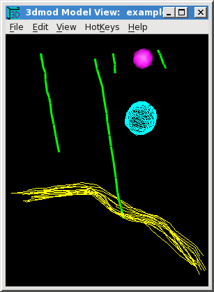
|
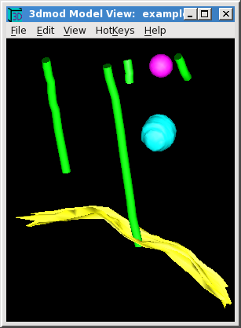
|
These are different views of the example model in the Model View Window, which
can be opened while running 3dmod by selecting Model View from the Image menu,
or by typing the hot key "v". This same window can be opened in a standalone
mode with
3dmodv example.mod
The model has been tilted around the X and Y axes using the arrow keys on the
keypad. The model can also be rotated with the middle mouse button, or using
arrows and text boxes in the Control dialog box that can be opened using the
Edit-Controls menu entry, but the arrow keys are often more convenient. A
single keystrike rotates the model by one step. Continuous rotation is started
by pressing the keypad Enter key followed by the desired arrow key; another
press of the Enter key stops the rotation.
If there is no keypad available, you can open a rotation tool with Edit-Rotation
and use it just like the arrow cluster in the Slicer window, except that the
middle button starts and stops continuous rotation.
On the left is the initial view of the model, before any of the default viewing parameters have been changed. These parameters are initially set to show open and closed contour objects with contour line tracings, and scattered points as wire baskets. The middle view shows two changes that can be made immediately, without having to compute surface meshes for the contours. The microtubule lines (green) have been made thicker and the scattered points are displayed as lighted surfaces. On the right is the display after making meshes for the objects (as explained below) and setting all objects to display as lighted surfaces. These display settings are all changed in the 3dmodv Objects dialog box, opened with the Edit-Objects menu item or the Shift+O hot key.

|
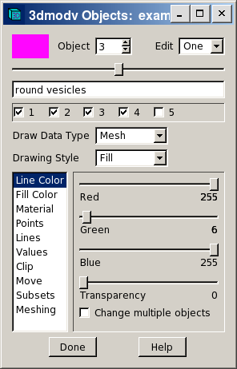
|

|
The Objects dialog box contains controls for selecting the current object to be edited, buttons for turning individual objects on or off, and a set of panels for setting different object properties or controlling the overall display. A panel is selected by clicking on its name in the list.
The example on the left shows how the appearance of the green lines was changed for the middle model view panel above. The "Lines" panel was selected, the 3D line width was increased from 1 to 3, and "Anti-alias rendering" was turned on to smooth out the jagged edges of the lines.
The example in the middle shows how the scattered points were displayed as solid objects. The selection for "Draw Data Type" was changed from "Contour" to "Mesh". 3dmod automatically changed "Drawing Style" from "Line" to "Fill" to produce the most commonly desired appearance.
The example on the right shows a change that was required after meshes were computed and displayed for all objects. By default, objects are lit only on one surface, which is always the outer surface for closed contour objects. (Note the dark surfaces on the interior of the microtubules.) However, a sheet like the chromosome boundary (yellow) does not have an obvious interior surface, and its lit surface happened to face downward, toward the chromosome. This problem was solved by checking the "Light Both Sides" option in the "Material" panel. The other method of solving this is to go back to the 3dmod Object Edit dialog box and change the "Front Face" from "Outside" to "Inside", then recompute the mesh.
The appearance of the magenta scattered point was improved between the middle and right views of the model by pressing the "G" hot key twice to increase sphere drawing quality. When there are many spheres, this degree of quality could significantly increase drawing time for the display, so it is not the default. The sphere drawing quality can also be controlled in the "Points" panel, which allows one to change the global quality setting (just as with the "G" and "Shift+G" hot keys) as well as set a quality for individual objects.
The Model View window, like the rest of 3dmod, has many hot keys, which are listed in a help page. Most of them are accessible through the HotKeys menu.
When the Model View window is opened from 3dmod, it is possible to display the image data in 3D in this window in two different ways. One way is to draw one or more planes of the image along with the model. Use the Edit-Image menu entry to open a dialog to control many aspects of this image projection. Multiple planes are drawn with enough transparency so that you can see through to the rearmost image plane; you can add more transparency to see the model through the images as well. The following pictures show an example of this display.
| 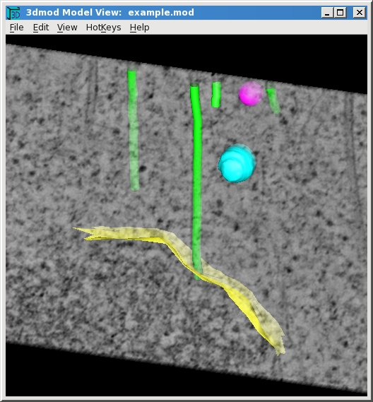
|
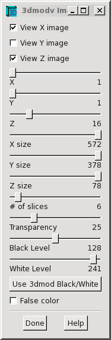
|
The other way to display image data is to draw a surface called an isosurface at a particular threshold level. The middle image below shows an isosurface rendering of the two basal bodies whose cross-section appear in the Zap window on the left.
| 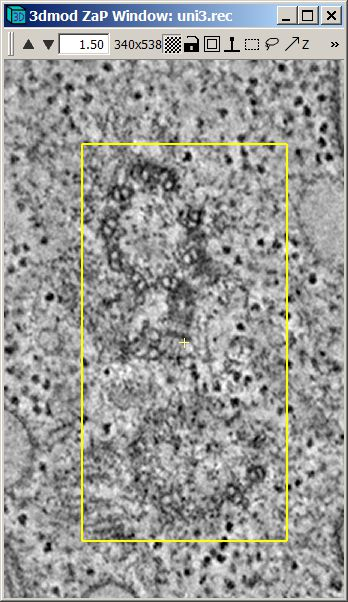
|
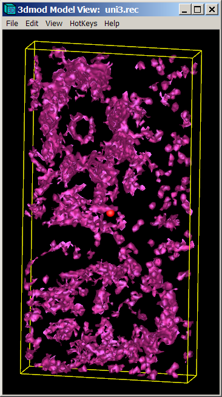
|

|
Select Isosurface from either the Image menu of the Info window or the Edit menu of the Model View window (or use the Shift+U hot key) to start the isosurface display and open the dialog to control it. The isosurface display is most useful when looking at macromolecular structures in averaged subvolumes from tomograms, but may also be useful for examining tomograms directly, particularly if the data are binned and small unconnected fragments are deleted from the display. The threshold can be adjusted to isolate features of interest, and the other sliders in the dialog can be used to select the position and the size of the volume being rendered.
There are two ways to relate positions on the isosurface to features in the image data. First, if you click on the isosurface with the right mouse button, the selected point will become the current image point in 3dmod. Second, if you turn on the display of the current point in the View menu of the Model View window, you can click on a point in the Zap or Slicer window and see that position marked in the Model View window with a red sphere (as seen above). Both of these methods will work better if you uncheck Link to global X, Y, Z so that the position of the volume being rendered does not change when you click in either place.
The display properties of the isosurface can be adjusted from the Edit-Objects dialog just as for actual objects in the model. The isosurface is kept in something called an "extra object" and it is assigned a number higher than the number of actual objects. The isosurface will disappear when you close the dialog, but you can use the Save to Object button to move it into a new actual object in the model.
Skinning is the name used for calculating a three-dimensional surface from contour data. This surface, once calculated, is represented by a mesh of triangles that can be stored within each object. If any contour points within that object are edited then the mesh for that object must be recalculated in order for it to match the contour data. There are two ways to calculate the mesh from the contour data within a model: with the imodmesh program, and with the Meshing panel of the Objects dialog box. Using imodmesh provides a wide range of options for controlling the meshing; whereas the Meshing panel provides a more intuitive interface with the most important options.
To skin the example model, this command was used:
imodmesh -C -t 1 -d 10 example.mod
By default, imodmesh will construct meshes only between pairs of contours, which will leave holes at the top and the bottom of a closed contour object because there is nothing to connect the highest and lowest contours to. The "-C" option tells imodmesh to fill in these holes or "Cap" them off.
In the model view on the right, the lines of the microtubules appear as tubes because imodmesh created cylindical meshes around them. It did this because of the "-t" option, which is followed by a list of open contour object numbers that should be given tubular meshes (here, just object 1). The "-d" option is then used to specify the diameter of the tubes, in pixels (10).
Sometimes the mesh data structure can get so large that interactive viewing is
very slow. There are two ways to make a mesh with a lower resolution, the
"-R" option to skip points within contours and the "-i" option to skip Z
levels. With "-R", imodmesh will skip points that are within a certain
distance of the line segments between the remaining points, thus preserving the
shape of curves. For example,
imodmesh -C -o 4 -R 0.75 -i 2 example.mod
Here, a new mesh is created only for object 4 (-o 4), and points will be skipped, but the surface defined by the mesh will always be within 0.75 pixel of the original data (-R 0.75). In addition, the "-i 2" makes imodmesh connect every other Z plane (i.e., at intervals of 2 in Z), reducing the mesh size by 2.
Each time you run imodmesh, the existing file is saved as a backup file with a "~" added to its name. You can also erase all of the mesh data from your model using the "-e" option to imodmesh.
Imodmesh also has an option (-l) to store a low resolution mesh alongside a regular mesh, so that a big model can be manipulated rapidly in low-resolution mode then switched to high-resolution mode for studying details. Other commonly needed options are -s and -P to connect contours across gaps; see the imodmesh man page for details.
All the options just mentioned are presented in the interface in the Meshing
panel:
| 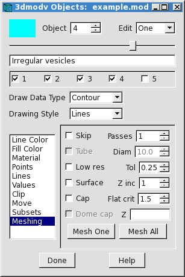 |
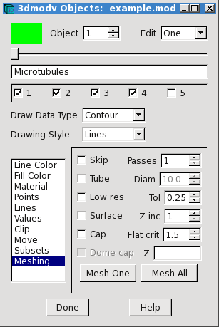 |
Whenever an object is meshed, either with imodmesh or through this interface, the options used to mesh the object are stored in the model, and their values will be displayed when this panel is opened. This makes it easy to remesh objects without having to remember exactly what options were used previously. On the left, the "Tol" and "Z inc" settings reflects the values entered with the -R and -i options to imodmesh, and the "Cap" checkbox indicates that the -C option was used for the vesicle object. On the right, the "Tube" selection and the diameter are shown for the microtubule object. When the "Make Mesh" button is pressed, the meshing process is started in a separate thread so that you can continue working in 3dmod while the mesh is being computed.
If you do mesh with imodmesh while you are modeling in 3dmod, be sure to save the model, run imodmesh, then immediately load the model back into 3dmod with the Reload Model entry in the File menu.
To display a scale bar in any of the image windows, or in the Model View window, select the Scale Bar entry from either the Edit menu of the Info window or the View menu of the Model View window. The following dialog will appear.
Scale bars will be drawn in the various windows as long as the dialog is open and Draw scale bars is checked. You can select whether the bars will be white or black in the image windows; the bar will always be white in the Model View window if the background there is black. The various controls allow you to adjust the size, location, and orientation of the bars. At the bottom is a list of the scale bar sizes in the various kinds of windows; you will need to record this information when you take a snapshot.
Because IMOD does not produce files that can be used in movie players, if you
want to make a movie of your images or models, you need to make a series of
snapshots of a window and import those images into movie-making software.
(For Windows, we have used Videomach from www.gromada.com for making
movies). There are two dialogs that help manage this task:
| 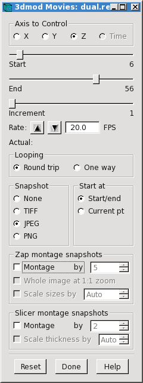
|
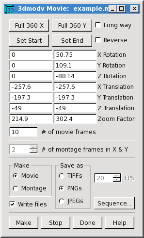 |
On the left is the dialog box opened with File-Movie/Montage from the 3dmod Info Window menu and used to control movieing and automatic snapshots in image display windows (primarily Zap and Slicer). The sliders at the top allow you to select the range and increment between slices to be snapshot. Here, every slice from 6 to 56 will be snapshot. The Looping radio buttons control how many pictures will be taken when you start a movie. With Round trip selected, pictures will be taken going in both directions, which is useful if your movie playing software will not loop back and forth. If your movie software will loop back and forth, you can select One way and get pictures going in just one direction. The Start at radio buttons allow you to choose whether the set of pictures will start and end at the limits in Z (Start/end) or at the currently displayed section (Current pt). To get a series of pictures, select one of the file formats in the Snapshot box and start a movie in a Zap or Slicer window with the second or third mouse button. The window will stop movieing when the set of pictures is finished.
On the right is the corresponding dialog for movies, opened with File-Movie/Montage from the Model View Window menu. In the most general case, you can adjust the model display to the desired starting position, orientation, and size, and press Set Start; then adjust the display to the desired final state and press Set End. Often one simply wants the model to spin all the way around, which is provided by the buttons Full 360 X and Full 360 Y. When you press Make, you will see the model go through its sequence of positions. If it is doing the right thing, select a file format and check Write files, then press Make again.
The different image formats differ in their degree and type of compression. TIFF files are uncompressed and can be quite large, since they are 24-bit color. PNG files have a loss-less compression that is quite effective for most model snapshots but much less effective for image snapshots. JPEG files will give the most compression, with some loss of information that can be controlled by the percent quality factor, selectable in the 3dmod Preferences dialog. For images with no model overlay, 80% quality is usually adequate for making movies. If there is a model overlay, you need 90% or higher quality to make it look decent in the individual snapshots (images here were shot at 95% quality). It might be preferable to take such snapshots as PNG's and let your movie software take care of the compression.
Note that both of these dialogs have a montage option for capturing high-resolution snapshots that are larger than the image window itself. In each case, the program zooms up the display and pans around to capture a montage of images, then assembles these into a single image and writes a file in the selected format. A movie of such montaged snapshots can be saved from the Zap window or from the Slicer, but only a single frame can be saved in high-resolution mode from the Model View window.
This section is to make you aware of some other features in 3dmod, so that you can investigate them when the need arises. Consult the help windows of the relevant dialog boxes, or the 3dmod man page, for more details. The first few items are related to the Surface/Contour/Point window, shown here on the left.
 |
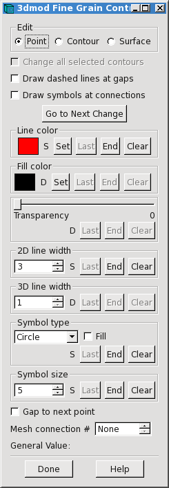 |